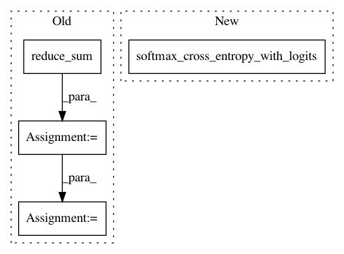

6abab74f85bf850de55fa9e39ece64b8a9eeff58,tf_unet/unet.py,Unet,__init__,#Unet#Any#Any#Any#Any#Any#Any#,179
Before Change
labels = tf.reshape(self.y, [-1, n_class])
weight_map = tf.mul(labels, class_weights)
weight_map = tf.reduce_sum(weight_map, axis=1)
loss_map = tf.nn.softmax_cross_entropy_with_logits(tf.reshape(logits, [-1, n_class]), labels)
weighted_loss = tf.mul(loss_map, weight_map)
loss = tf.reduce_mean(weighted_loss)
else:
loss = tf.reduce_mean(tf.nn.softmax_cross_entropy_with_logits(tf.reshape(logits, [-1, n_class]),
tf.reshape(self.y, [-1, n_class])))
After Change
if class_weights is not None:
class_weights = tf.constant(np.array(class_weights, dtype=np.float32))
weighted_logits = tf.mul(tf.reshape(logits, [-1, n_class]), class_weights)
loss = tf.reduce_mean(tf.nn.softmax_cross_entropy_with_logits(weighted_logits, tf.reshape(self.y, [-1, n_class])))
else:
loss = tf.reduce_mean(tf.nn.softmax_cross_entropy_with_logits(tf.reshape(logits, [-1, n_class]),
In pattern: SUPERPATTERN
Frequency: 3
Non-data size: 4
Instances
Project Name: jakeret/tf_unet
Commit Name: 6abab74f85bf850de55fa9e39ece64b8a9eeff58
Time: 2016-12-27
Author: jakeret@phys.ethz.ch
File Name: tf_unet/unet.py
Class Name: Unet
Method Name: __init__
Project Name: wenwei202/iss-rnns
Commit Name: d41aa4d2c995796e3978a83052515572f402fa5f
Time: 2017-01-21
Author: seominjoon@gmail.com
File Name: basic/model.py
Class Name: Model
Method Name: _build_loss
Project Name: brilee/MuGo
Commit Name: 754238ee0338c960ed6f3640f3ef6dd3b3fb7108
Time: 2017-06-23
Author: brian.kihoon.lee@gmail.com
File Name: policy.py
Class Name: PolicyNetwork
Method Name: set_up_network